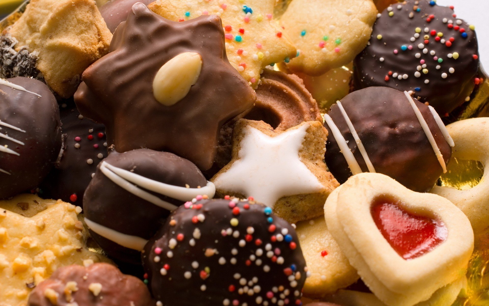

CHOCKLATE CAKE

Intresting facts about cake
- 1. Cake is a form of sweet food made from flour, sugar, and other ingredients, that is usually baked.
- 2. Cake is often served as a celebratory dish on ceremonial occasions, such as weddings, anniversaries, and birthdays.
- 3. During the Roman period, the name for cake became "placenta" which was derived from the Greek term.
- 4. Early cakes in England were also essentially bread.
COOKIE
Intresting facts about cookie
- A cookie is a baked or cooked food that is typically small, flat and sweet.
- The most common modern cookie, given its style by the creaming of butter and sugar, was not common until the 18th century.